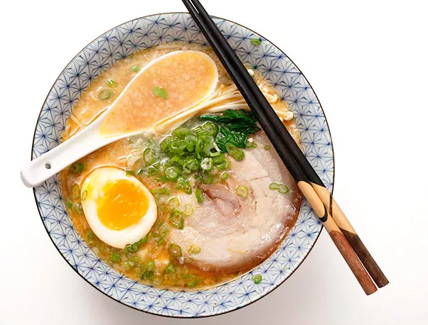

Tonkotsu Ramen

Tonkotsu Ramen Recipe
Description
An easy to cook Tonkotsu Ramen for busy individuals
Flavoured with pork broth, this easy to cook ramen can be completed in less than 40 MINUTES!
Ingredients are readily found in major convenience stores and supermarkets
Ingredients
Ramen Soup
- 2 x Garlic
- 1 x Olive oil
- 1 Shallot
- 1 tbsp toasted white sesame seeds
- 1 tbsp roasted sesame oil
- ¼ lb ground pork
- 1 lb of pork ribs
Ramen Main Ingredients
- 5 x Chashu
- ! serving of Ramen Noodles
- 2 tbsp Green Scallion
Steps
- Mince the garlic
- In a medium pot, heat the sesame oil and pork ribs over medium-low heat and add the minced shallot
- Increase heat until meat no longer pink
- Add sake and simmer
- Cook noodles well and add in soup